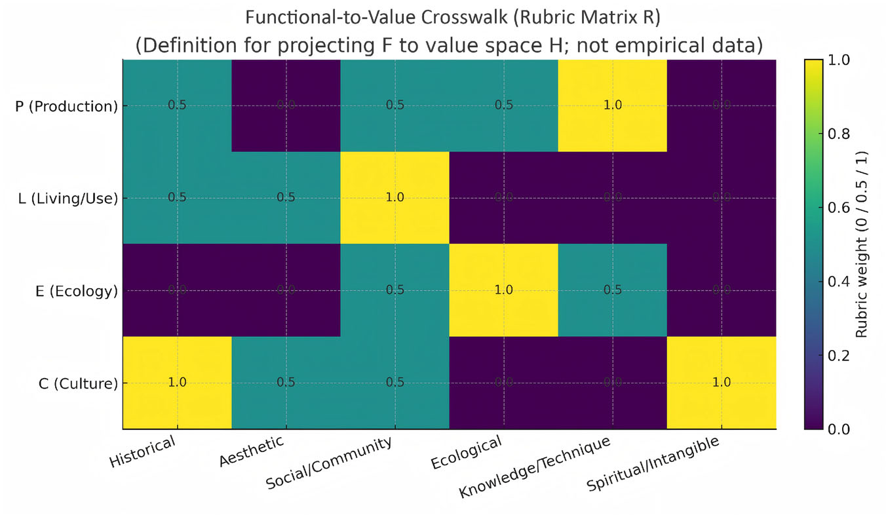
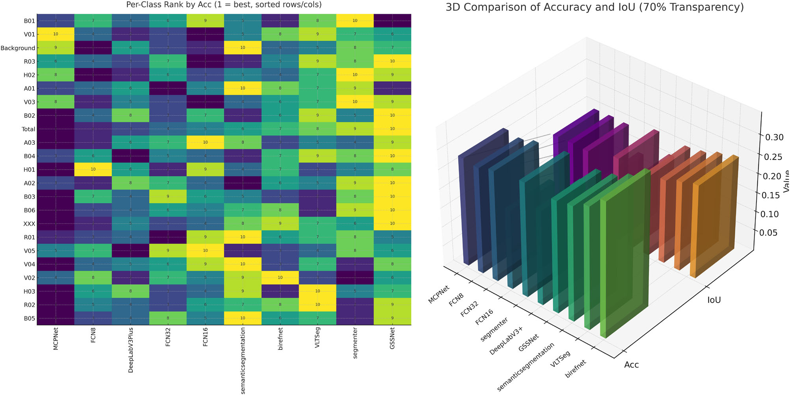
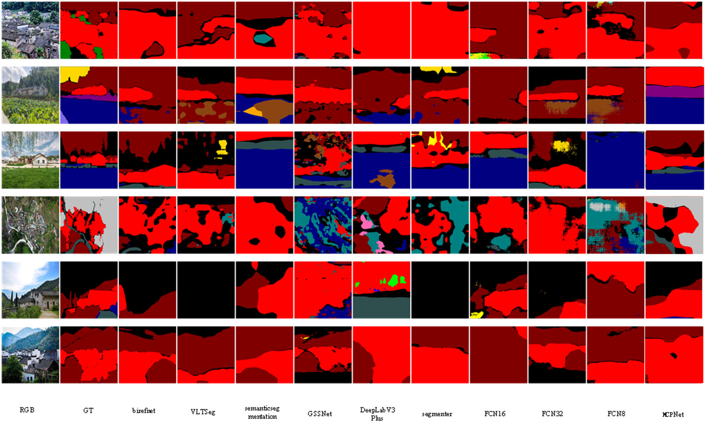
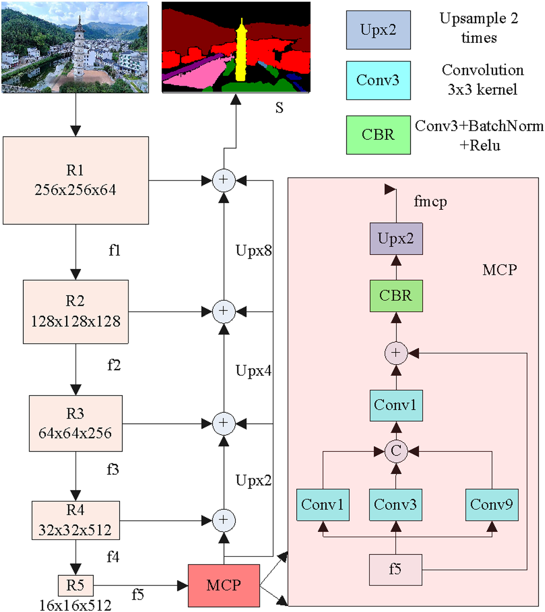
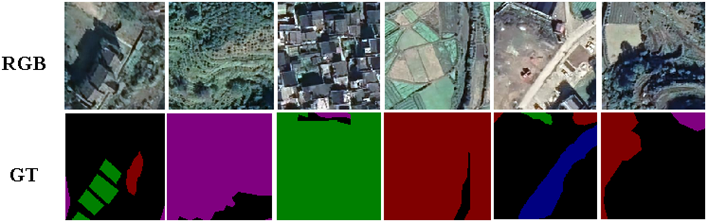
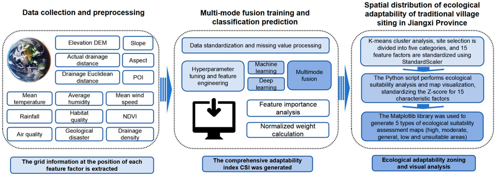
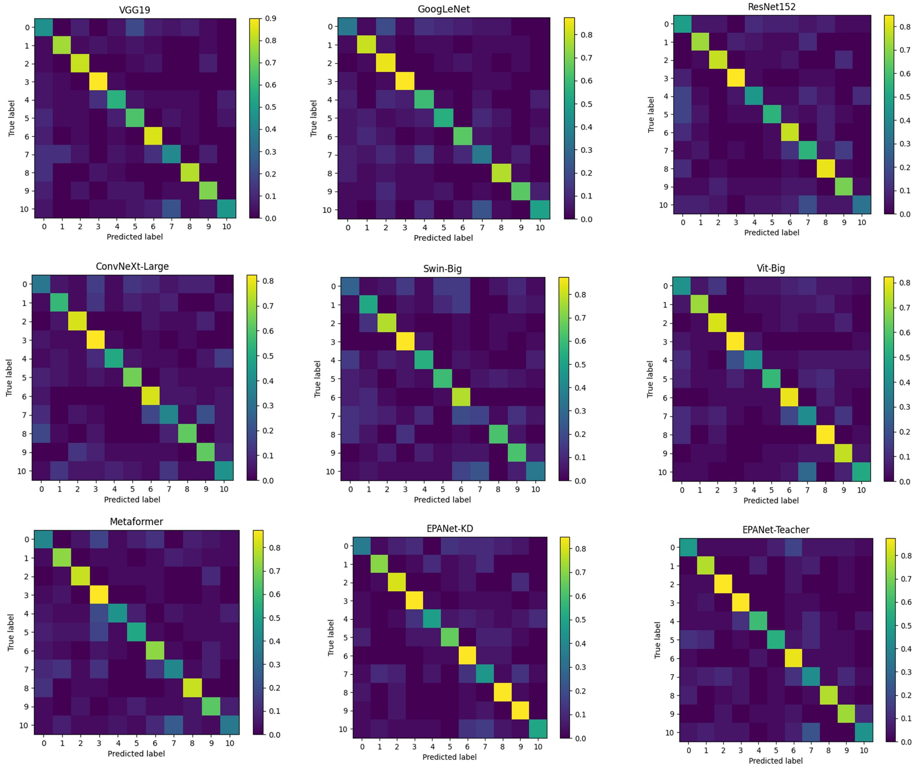
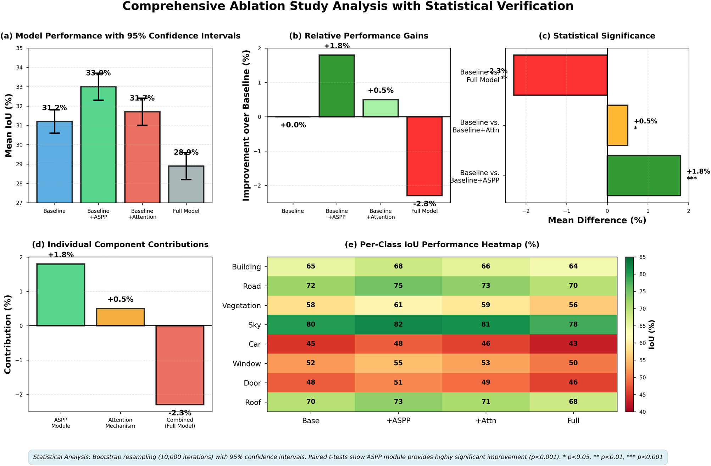

Cultural Heritage GeoAI
Cultural Heritage GeoAI · Landscape Architecture · Artificial Intelligence
文化遗产地理智能 · 风景园林 · 人工智能
Remote Sensing Semantic Segmentation · Mamba Prompt Learning · Traditional Village Spatial Gene Analysis
Developing AI models and spatial gene frameworks for interpreting, protecting, and planning traditional village landscapes.
构建面向传统村落保护的 AI 模型、空间基因图谱与规划转译方法。
State-space models for long-range spatial dependency modeling in unstructured rural environments. Addressing CNN limitations in heritage landscape interpretation.
Pixel-level classification of remote sensing imagery with boundary-aware segmentation for culturally significant spatial elements.
Decoding spatial patterns that encode traditional ecological wisdom in built form, land use, and ecological arrangement of traditional villages.
Translating AI analysis into actionable planning recommendations for traditional village conservation and rural revitalization.
Introduces TV-RSI-413: 413 villages, 2,478 expert-annotated scenes, 22 semantic classes (κ = 0.92). MCPNet achieves mAcc 34.7%, mIoU 24.3% (Official), and Acc 85.3%, mIoU 70.7% (Operational). Three data sources: DSLR + UAV + street-view. Five thematic modules: Architecture, Vegetation, Farmland, Water, Roads.
High-resolution remote sensing imagery from traditional villages in Jiangxi Province
Pixel-level labeling with high inter-rater agreement
MPLNet: Mamba + Prompt Learning + Multi-scale Context Perception
Pattern extraction and spatial relationship modeling for heritage elements
AI-assisted recommendations for heritage conservation and rural revitalization
This is not isolated papers, but a continuous research system from ecological environment to AI model to heritage planning.
张成博士的成果不是孤立技术实验，而是围绕传统村落保护形成了连续研究路径。
AI-based environmental suitability and traditional village location analysis.
宏观生态适宜性
PLOS ONE 2025MPLNet and Mamba prompt learning for remote sensing interpretation.
中观遥感语义分割
PLOS ONE 2026EPANet-KD and knowledge distillation for fine-grained classification.
微观村落分类识别
PLOS ONE 2024TV-RSI-413 and MCPNet for living heritage spatial gene decoding.
跨尺度空间基因框架
npj Heritage Science 2026Ecological wisdom grounding for landscape architecture practice.
风景园林领域基础
Open J. Social Sciences 2022Suitable for Hong Kong, Singapore, and international geomatics / GIScience / remote sensing groups.
适合 GeoAI、遥感、GIScience 与空间数据智能方向团队。
Suitable for urban analytics, future cities, built environment, and digital twin labs.
适合城市智能，未来城市、建成环境与数字孪生方向团队。
Suitable for landscape architecture, heritage conservation, rural planning, and traditional settlement studies.
适合风景园林、遗产保护、乡村规划与传统聚落研究方向团队。
Suitable for computer vision, remote sensing AI, and foundation model adaptation groups.
适合计算机视觉、遥感 AI 与基础模型适配方向团队。
Journal-level metrics should be verified from official indexing databases.

MCPNet Architecture — Multi-scale Context-Perceptual Head (npj Heritage Science 2026, Fig. 7)

Per-class IoU & Accuracy Heatmap — 22 semantic classes (npj Heritage Science 2026, Fig. 11)

Segmentation: MCPNet vs. DeepLabV3+ — boundary-aware heritage mapping (Heritage Science 2026)

TV-RSI-413 Dataset: 413 villages, 2,478 scenes, κ = 0.92 — representative annotations (Fig. 5)

MPLNet: Mamba + Prompt Learning Architecture (PLOS ONE 2026)

Ecological Suitability Distribution — Jiangxi Province traditional villages (PLOS ONE 2025)

EPANet-KD Performance — 3.32M params, 0.42G FLOPs (PLOS ONE 2024)

Cross-regional Zero-shot Transfer — Jiangxi → Hunan Province (npj Heritage Science 2026)
npj Heritage Science · DOI: 10.1038/s40494-025-02253-1
PLOS ONE · DOI: 10.1371/journal.pone.0341130
PLOS ONE · DOI: 10.1371/journal.pone.0332375
PLOS ONE · DOI: 10.1371/journal.pone.0298452
Application No. 202511898333.5 · Filed
Application No. 202610071601.4 · Filed
No. 2020114547103 · Granted
CN 220733832 U · Granted
This repository is designed as a reproducible research package for potential postdoctoral collaboration in Cultural Heritage GeoAI, AI-assisted traditional village conservation, remote sensing semantic segmentation, spatial gene atlas construction, and planning-oriented heritage conservation.
该仓库面向文化遗产 GeoAI、传统村落保护、遥感语义分割、空间基因图谱和规划转译方向的博士后合作。
Well-structured codebase with training, evaluation, and inference infrastructure.
TV-RSI-413 with expert annotations for traditional village segmentation.
Filed patents on core AI methods. Demonstrates capability to protect intellectual property.
Multiple journal articles in Cultural Heritage GeoAI and remote sensing.
For research collaborations, postdoctoral positions, or grant proposals, please contact via email.
Phone available upon request.